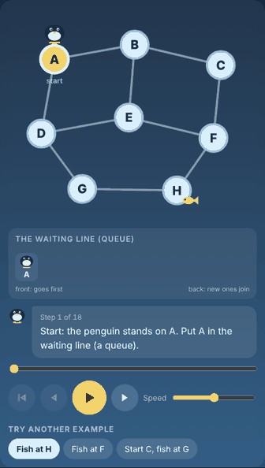

← Πίσω στο CS Penguins English
Το CS Penguins για σχολεία
Μάθε στους μαθητές πώς σκέφτονται οι υπολογιστές, με πιγκουίνους. 39 σύντομα, κινούμενα μαθήματα για αλγορίθμους και βασικά της πληροφορικής, για μαθητές 7 έως 15 ετών, στα Ελληνικά και στα Αγγλικά.

Άνοιξε το CS PenguinsΔωρεάν βιβλίο εκπαιδευτικού (PDF)
Πώς το χρησιμοποιείς
Άνοιξε το CS Penguins στο πρόγραμμα περιήγησης και μοιράσου τη διεύθυνση με τους μαθητές. Κάθε μαθητής διαλέγει ένα θέμα και ένα μάθημα. Ερωτήσεις; Άνοιξε ένα issue στη σελίδα του project στο GitHub.
Τι περιέχει
| Ηλικίες | Μαθήματα |
|---|---|
| 7–10 | Δυαδικοί αριθμοί, Επαναλήψεις (Loops), Μεταβλητές, Αν και Αλλιώς, Πιγκουίνος-Ρομπότ |
| 7–11 | Μέσα στον υπολογιστή, Αρχεία και φάκελοι |
| 7–12 | Ψηφιακή πολιτότητα |
| 8–12 | Διαγράμματα Ροής και Αλγόριθμοι, Βρες το Σφάλμα, Αναζήτηση κατά πλάτος (BFS), Αναζήτηση κατά βάθος (DFS), Ταξινόμηση φυσαλίδας, Ταξινόμηση με επιλογή, Ταξινόμηση με εισαγωγή |
| 8–13 | Κωδικοί και ηλεκτρονικό ψάρεμα |
| 9–13 | Τύποι Δεδομένων, Πίνακες, Υπολογιστικά φύλλα, Δυαδική αναζήτηση, Γράμματα και Εικόνες ως Αριθμοί, Μυστικά Μηνύματα, Δεδομένα και Γραφήματα, Στοίβα και ουρά |
| 10–14 | Συναρτήσεις |
| 11–15 | Λογικές Πύλες, Βάσεις δεδομένων, Ταχύτητα Αλγορίθμων, Πώς το Διαδίκτυο Στέλνει ένα Μήνυμα, Μάθε στον Υπολογιστή, Τοπολογική ταξινόμηση, Σωρός (Heap), Αλγόριθμος του Ντάικστρα, Αλγόριθμος του Πρίμ, Αλγόριθμος του Κρούσκαλ, Γρήγορη ταξινόμηση, Ταξινόμηση με συγχώνευση |
| 12–15 | Αναδρομή, Μπέλμαν-Φορντ |
Κάθε μάθημα έχει έναν κινούμενο παίκτη (βήμα βήμα, με έλεγχο ταχύτητας), μια «ιστορία με εικόνες», μια σύντομη εξήγηση, πόσο γρήγορος είναι, πού χρησιμοποιείται, ψευδοκώδικα για τους μεγαλύτερους μαθητές και κουίζ ή επίπεδα εξάσκησης. Οι μαθητές έχουν επίσης καθημερινό παζλ και εκτυπώσιμο πιστοποιητικό με το όνομά τους.
Ένα μάθημα 45 λεπτών
| Χρόνος | Τι κάνετε |
|---|---|
| 10 λεπτά | Δείτε το μάθημα μαζί στον προβολέα. Κάντε παύση και ρωτήστε: «τι γίνεται μετά;» |
| 15 λεπτά | Κάντε τη δραστηριότητα από το βιβλίο, χωρίς υπολογιστές (για παράδειγμα: βάλτε τους μαθητές σε σειρά ύψους και ταξινομήστε τους). |
| 10 λεπτά | Οι μαθητές δοκιμάζουν το κουίζ εξάσκησης στη δική τους συσκευή. |
| 10 λεπτά | Ερωτήσεις από τη σελίδα του βιβλίου και έλεγχος των απαντήσεων όλοι μαζί. |
Κατέβασε το βιβλίο εκπαιδευτικού (PDF, Ελληνικά)
Ερωτήσεις που κάνουν οι εκπαιδευτικοί
Χρειάζονται λογαριασμούς οι μαθητές; Όχι. Δεν υπάρχουν λογαριασμοί ούτε σύνδεση.
Τι γίνεται με τα δεδομένα των μαθητών; Το CS Penguins δεν συλλέγει ονόματα ή άλλα προσωπικά στοιχεία από τους μαθητές. Η πρόοδός τους (αστέρια, βαθμολογίες κουίζ, όνομα στο πιστοποιητικό) μένει στη δική τους συσκευή. Διάβασε την πολιτική απορρήτου.
Δουλεύει σε tablet και σχολικούς υπολογιστές; Ναι, σε κάθε σύγχρονο πρόγραμμα περιήγησης. Χρειάζεται σύνδεση στο διαδίκτυο για να ανοίξει.
Το CS Penguins είναι ένα δωρεάν εκπαιδευτικό project.